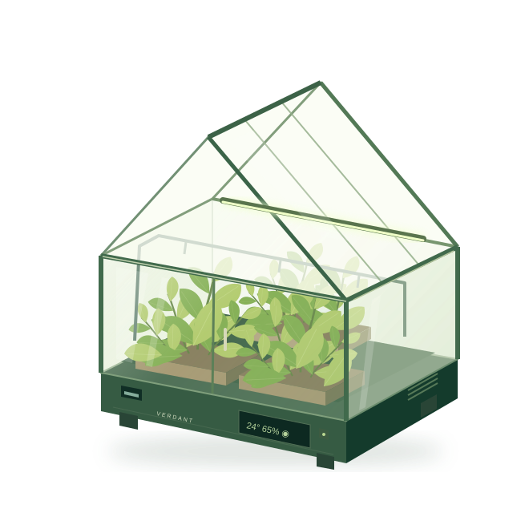

The foundation
Transparent enclosure, growing trays and manual watering.
Your own growing world, right at home. Meet VERDANT SmartGrow 2.0, our vision for an indoor greenhouse that brings thoughtful technology closer to nature.

A windowsill. A quiet corner. A classroom full of curiosity.
Project VERDANT imagines a dedicated space for indoor growing, where watering, light and environmental information come together in one transparent tabletop greenhouse.
Created by Econova Labs, SmartGrow 2.0 explores how coordinated plant-care systems could make growing easier to organise, observe and understand.
A concept with room to grow. VERDANT is a design proposal. Features, plant suitability and performance require engineering and prototype testing.
Each part has a purpose.
Together, they make VERDANT.
A built-in reservoir, soil-moisture sensing and automatic drip irrigation. AquaCore is designed to deliver water when the selected moisture threshold calls for it.
Try an illustrative control panel.
Small adjustments. A more personal space.
Explore the interface idea. These are example settings, not live sensor readings or plant-care advice.
Automatic mode · Lighting 70% · Air circulation on
Design stages, each building on the last.
A development journey, not product releases.
Transparent enclosure, growing trays and manual watering.
AquaCore watering and programmable LumaGrow lighting.
ClimateSync monitoring and AirFlow ventilation.
BioSphere modular trays and EcoSense central control.
Six proposed systems. One integrated SmartGrow concept.
For apartment residents and home gardeners exploring plant growing without a large outdoor garden.
A concept for discovering plant development, environmental sensing and the relationship between nature and technology.
Removable trays and modular arrangements for suitable plants, with growing conditions chosen around their needs.
Would VERDANT fit into your everyday life? Tell us what you’d grow, which features matter, and what you’d change. Your perspective can help shape the next stage.
Give feedback ↗Your response is saved privately. Your name and email will not be shown publicly.
Real opinions. Thoughtful development. No made-up results.Open the Econova Labs website
on your phone.
VERDANT is currently a design concept, not a commercially available product. Price, availability and final specifications have not been established.
The concept is intended for indoor plants. Suitable species, substrates, light levels and watering schedules would need to be established through detailed design and testing. It is not designed as an animal or insect habitat.
ClimateSync proposes temperature and humidity monitoring and alerts. Active heating, cooling and humidification are separate functions requiring further engineering.
Your name, email, rating and comments are saved for Econova Labs project research. Only the authorized dashboard account can read the responses. Participation is voluntary; your email may be used to follow up about your feedback.
Customer research, verified competitor comparisons, engineering decisions and prototype testing. Possible future ideas include remote monitoring and plant-specific presets; these are not current product features.